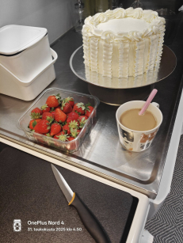
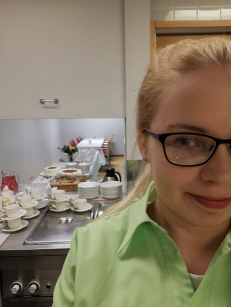
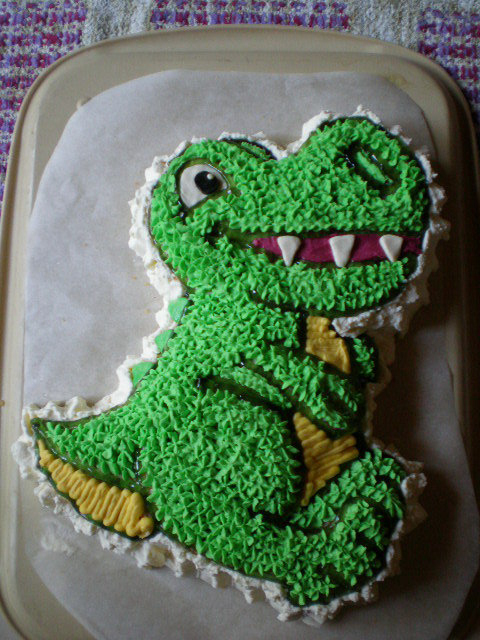

About Me


Nämä ovat Ullan kakkusivut. Ulla on yhdeltä ammatiltaan leipurikondiittori ja on tehnyt alalla töitä noin viisi vuotta. Nykyään opiskelujen ohella tekee leipomuksia kotona ystäville ja sukulaisilleen ylläpitääkseen taitoa ja ilostuttaakseen perhettään ja ystäviä. Jokainen kakku on uniikki ja toteutettu käsityönä. Kakkujen teko on alkanut harrastuksena ja sitä on toteutettu nyt noin 15 vuoden ajan.
Alla kuvassa ensimmäisiä vaativampia kakkukokeiluja ja ensimmäinen sosiaalisen median alustalla jaettu kakkukuva.

Ulla on leiponut kakkuja monenlaisiin tilaisuuksiin, kuten syntymäpäiville, häihin, ristiäisiin ja muihin juhliin. Hän on erikoistunut erilaisiin kakkuihin, kuten voileipäkakkuihin, juustokakkuihin ja teemakakkuihin. Ullan kakut tunnetaan kauniista ulkonäöstään ja herkullisesta maustaan, ja hän on saanut paljon kiitosta asiakkailtaan luovuudestaan ja tarkkuudestaan jokaisen kakun toteutuksessa.